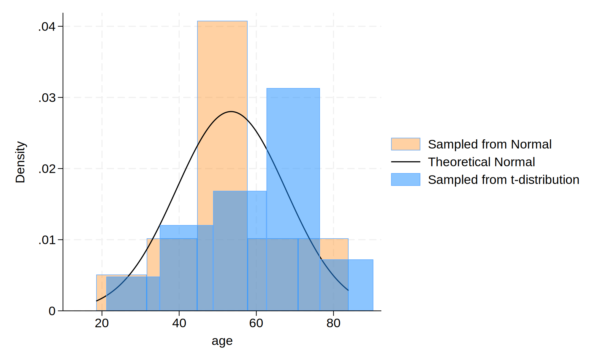

Background: A user downloads and installs a system of program files, mostly ado-files, which form the foundation of most of the commands used in Stata Programming. Using those commands and additional syntax written out sequentially in a do-file, the user creates well-formed instruction to Stata called a do-file script. Once the user runs this script, results are generated and displayed in the results window, in a graph, or in a format (.xlsx, .log, .dta, .docx, .md, LaTeX, .html, etc). The .html file format is of specific interest since its the pathway to self-publication. To illustrate how this may be achieved in Stata, we hereby introduce the dyndoc command.
Methods: We created a do-file and populated it with this abstract using markdown language. Anything in this document that is not ordinary text including «dd_version: 2», «dd_do:nooutput», «/dd_do», «dd_display: c(N)» is a markup. Results that might be numeric, string, alphanumeric, or formatted as macros are embeded at these markedup points. We then saved this document using the file extension .do; however, any text file extension will work (.txt, .md, .do, etc). To the pwd where we saved this text file, we added a cascading style sheet stmarkdown.css and header.txt to enhance the aesthetic of our .html file. Finally, we typed the following command into the Stata command window: dyndoc filename.do, saving(filename.html) replace. In the key analysis, $Y = \beta_0 + \beta_1 X , where $Y is life expectancy at birth in years, the outcome or dependent variable; $X is the country, the predictor or independent variable being tested.
. cls
. clear
. set obs 30
Number of observations (_N) was 0, now 30.
. gen age=(rnormal()*15)+57
. gen age_t=(rt(_N)*15)+57
. hist age, ///
> fcolor(orange%40) /// simulated normal
> addplot(hist age_t, fcolor(midblue%50)) /// simulated t-distribution
> normal /// theoretical normal
> legend(on ///
> lab(1 "Sampled from Normal") ///
> lab(2 "Theoretical Normal") ///
> lab(3 "Sampled from t-distribution") ///
> )
(bin=5, start=18.505632, width=13.078137)
. graph export agedistribution.png, replace
file agedistribution.png saved as PNG format

Footnote: “Distribution of $\text{Age, years} \sim \mathcal{N}(\mu=57,,\sigma^{2}=225)$, to provide a mathematical representation of the age distribution.”
Dataset description: Below you can find a table showing the frequency of the hypothetical dataset.
. display c(N)
30
. display c(k)
2
. list in 1/5
+---------------------+
| age age_t |
|---------------------|
1. | 83.89632 90.31078 |
2. | 47.3803 61.54525 |
3. | 70.70689 65.83897 |
4. | 48.52404 69.19563 |
5. | 47.59589 52.15388 |
+---------------------+
Results: We identified the newly created .html file in our folder and opened it to compare its format to this markdown file. And we saw all that we had made, and behold, it was very good. Ghastly macros in the original markdown language now appeared as neatly formatted results.